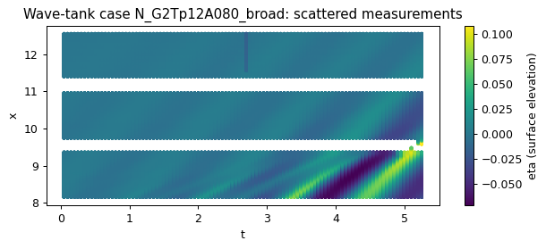
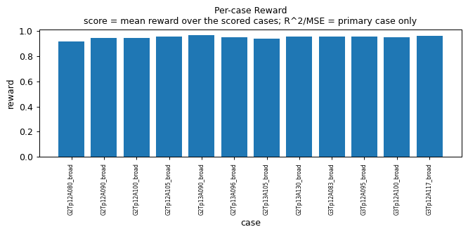
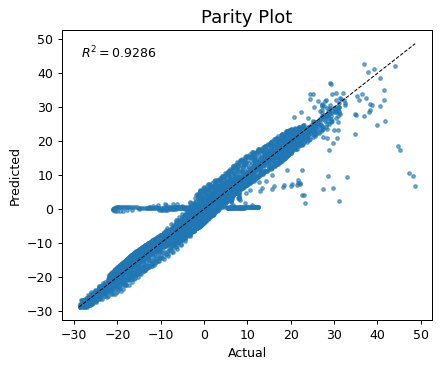

Breaking waves
EqGPT discovered a law for breaking-wave surface elevation from 12 wave-tank
experiments (Xu et al., Nat Commun 16, 10255,
2025). KD hosts EqGPT as a search
plugin and reproduces that published result, with permission of the authors, on
the same scattered (t, x, eta) measurements:
In KD's notation the surface elevation is the field u, so the recovered
right-hand side is the term set {u_x, u_xxx, diff2_x(mul(u, u_x))} with
per-experiment coefficients.
from pathlib import Path
import matplotlib.pyplot as plt
import kd
from kd.data.loaders import load_wave_breaking_cases, wave_breaking_case_to_dataset
The data: wave-tank measurements
WaveBreaking.pkl holds surface-elevation records from the BUBER and EURUS
campaigns in the 27.2 m glass-walled wave tank at Imperial College London,
where the air-water interface was reconstructed frame by frame from three
cameras running at 20 Hz; the paper's discovery uses the 12 "N" experiments. Each case is a scattered
point cloud (t, x, eta) with no grid, so the dataset is SCATTERED topology.
The plugin runs all 12 cases internally; the facade's primary dataset is the
first (sorted) N case.
cases = load_wave_breaking_cases()
n_cases = sorted(name for name in cases if "N" in name)
primary_name = n_cases[0]
primary_ds = wave_breaking_case_to_dataset(cases[primary_name])
print(f"N cases ({len(n_cases)}): {', '.join(n_cases)}")
print(f"Primary case : {primary_name} ({primary_ds.fields['u'].values.numel()} points)")
t = primary_ds.axes["t"].values
x = primary_ds.axes["x"].values
eta = primary_ds.fields["u"].values
fig, ax = plt.subplots(figsize=(7.0, 3.2), dpi=90)
sc = ax.scatter(t, x, c=eta, s=4, cmap="viridis")
fig.colorbar(sc, ax=ax, label="eta (surface elevation)")
ax.set(xlabel="t", ylabel="x", title=f"Wave-tank case {primary_name}: scattered measurements")
fig.tight_layout()
plt.show()
N cases (12): N_G2Tp12A080_broad, N_G2Tp12A090_broad, N_G2Tp12A100_broad, N_G2Tp12A105_broad, N_G2Tp13A090_broad, N_G2Tp13A096_broad, N_G2Tp13A105_broad, N_G2Tp13A130_broad, N_G3Tp12A083_broad, N_G3Tp12A095_broad, N_G3Tp12A100_broad, N_G3Tp12A117_broad
Primary case : N_G2Tp12A080_broad (507868 points)

Multi-case fit
EqGPTConfig.wave_preset pins the paper's setup: multi-case wave mode
(case_filter="N"), sparsity_alpha=0.02. Per generation the pretrained GPT
proposes candidate right-hand sides; KD scores each candidate on every
experiment (per-case surrogate and least-squares fit) and keeps the candidate
with the best mean reward over the cases that scored successfully. seed=21
makes the run reproduce the same result each time, through KD's CPU torch RNG
stream.
The cell below runs a 5-generation search across all 12 experiments, loading the per-case surrogates and the measurement records.
DEMO_SEED = 21
model = kd.Model(
algorithm="eqgpt",
generations=5,
config=kd.EqGPTConfig.wave_preset(seed=DEMO_SEED, primary_case=primary_name),
).fit(primary_ds)
print(f"Reproduced structure : {model.best_expr_}")
print(f"Best mean reward : {model.best_score_:.4f}")
[kd] Generation 1/5 | best EqGPT reward=0.9486 | expr=u_xxx + diff2_x(mul(u, u_x)) + u_x
[kd] Generation 2/5 | best EqGPT reward=0.9486 | expr=u_xxx + diff2_x(mul(u, u_x)) + u_x
[kd] Generation 3/5 | best EqGPT reward=0.9486 | expr=u_xxx + diff2_x(mul(u, u_x)) + u_x
[kd] Generation 4/5 | best EqGPT reward=0.9486 | expr=u_xxx + diff2_x(mul(u, u_x)) + u_x
[kd] Generation 5/5 | best EqGPT reward=0.9486 | expr=u_xxx + diff2_x(mul(u, u_x)) + u_x
[kd] Done. Best: u_xxx + diff2_x(mul(u, u_x)) + u_x (EqGPT reward=0.9486)
Reproduced structure : u_xxx + diff2_x(mul(u, u_x)) + u_x
Best mean reward : 0.9486
Recovered law vs the published equation
The published structure is eta_t = -c1*eta_x - c2*eta_xxx - c3*(eta*eta_x)_xx
(all three RHS terms). The fitted coefficients below are the primary case's
least-squares fit in the declared u_t = sum(c * term) domain; every
experiment gets its own coefficients (next section).
equation = model.result_.equation
print(f"u_t = sum(c * term), primary case {primary_name}:")
print(f" {'term':<24} coefficient")
for term, coeff in equation.terms:
print(f" {term:<24} {float(coeff.value):+.4g}")
u_t = sum(c * term), primary case N_G2Tp12A080_broad:
term coefficient
u_xxx -0.0001595
diff2_x(mul(u, u_x)) +2.611e-05
u_x -0.824
Render the report
kd.VizEngine.render_all draws the figures this data supports and collects
them into one HTML page. report.warnings accounts for the rest, one note per
figure family, and the same notes appear on the report page itself.
report = kd.VizEngine(output_dir=Path("../out/wave_breaking")).render_all(
model.result_, algorithm=model.algorithm_, dataset=primary_ds
)
print(f"Report : {report.report}")
print(f"Figures : {len(report.figures)}")
print("\nreport.warnings:")
for note in report.warnings:
print(f" - {note}")
Report : ../out/wave_breaking/report.html
Figures : 10
report.warnings:
- scattered data: field-grid plots skipped (no grid topology)
- plugin plot 'per_case_reward': headline score is the mean reward over the scored cases (n/a cases excluded); R^2/MSE metrics are primary-case only
Composable figure functions
Every figure in the report is also a plain function that draws onto a
Matplotlib Axes you pass in: the platform figures live in kd.viz.plots,
and algorithm-owned panels are reached through the plugin's render_plot.
The per-case reward panel is EqGPT's own: one bar per experiment, the discovered structure fitted to each case separately.
fig, ax = plt.subplots(figsize=(7.5, 3.8), dpi=90)
model.algorithm_.render_plot("per_case_reward", ax)
fig.tight_layout()
plt.show()

A platform figure works the same way. plot_parity puts the fitted
right-hand side against the measured u_t of the primary case, one point per
measurement.
from kd.viz.plots import plot_parity
fig, ax = plt.subplots(figsize=(5.0, 4.2), dpi=90)
plot_parity(model.result_, ax)
fig.tight_layout()
plt.show()

Reproduce this run
The run needs three assets the repository does not ship: the pretrained GPT weights and the per-case surrogate checkpoints come from the EqGPT authors, and the measurement pickle is a large data file. Point KD at them with two environment variables:
| asset | where KD looks |
|---|---|
gpt_model/PDEGPT_wave_breaking.pt |
KD_EQGPT_ASSET_DIR |
model_save/wave_breaking/95_0_<case>(Non_unit)/Net_Sin_*.pkl |
KD_V1_WAVE_ASSETS |
WaveBreaking.pkl |
data/hf-knowledgediscover/ under the repo root |
With those in place:
KD_EQGPT_ASSET_DIR=/path/to/assets KD_V1_WAVE_ASSETS=/path/to/assets \
uv run --with jupyter jupyter nbconvert --to notebook --execute --inplace \
examples/notebooks/wave_breaking.ipynb
Next steps
examples/16_eqgpt.py-- EqGPT on synthetic Burgers data, no wave assets needed beyond the GPT weights.examples/09_compare_algorithms.py-- the same dataset scored by all seven algorithms against a single NMSE measure.examples/03_visualize.py-- the report pipeline on a fast synthetic fit, no assets at all.